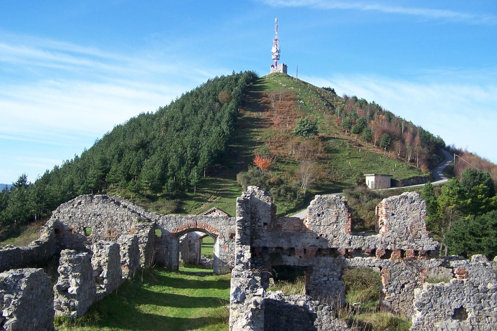

DidaktikApp

La Leyenda del Serantes
Cuentan las leyendas que cada vez que un habitante de Santurtzi se adentraba en el monte Serantes, no regresaba
jamás. Antiguamente, existía la creencia de que Serantes era un volcán, que tenía varios agujeros conectados con
el mar Cantábrico. Un día lluvioso y oscuro, tres hermanas decidieron salir a pasear por los alrededores del
monte, inconscientes de los peligros que las rodeaban. Nunca volvieron a casa. Se dice que cada una de ellas cayó
por un hueco diferente del mismo agujero. Desde entonces se conoce al agujero como “La Sima de las Tres
Hermanas”.
Otra de las historias que se ha estado murmurando por el pueblo es la de aquel capitán que iba a caballo rondando
las zonas del Serantes; y al igual que las hermanas, desapareció sin dejar ningún rastro, ni de él, ni del
caballo. Son muchos los que dicen que probablemente acabaran todos en el mar, porque se comenta que los agujeros
conectan directamente con el mar. Pero quién sabe, igual cuando vayamos al puerto podemos ver algún agujero.